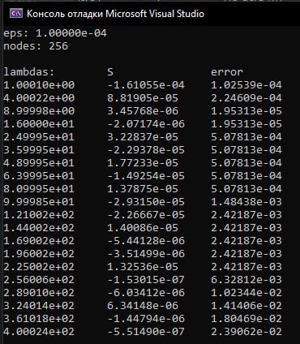
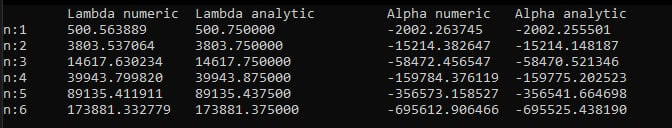

Научная деятельность
Прямая и обратная задача Штурма-Лиувилля 2-го порядка
Работа проводилась в рамках гранта РНФ. Прямая задача Штурма-Лиувилля заключается в поиске собственных значений уравнения по заданным потенциалам. Обратная задача заключается в построении потенциалов по заданным спектральным данным (множество собственных значений и их весовых чисел). Для реализации алгоритма решения прямой задачи, уравнение было сведено к системе для применения метода Рунге-Кутта. Идея метода заключается в поиске решений при различных спектральных параметрах методом Рунге-Кутта и поиске методом дихотомии собственных значений среди спектральных параметрах, при которых считались решения. Для реализации решения обратной задачи был использован метод отображений. Оба метода были реализованы на языке С++, проведены численные эксперименты и подтверждена корректность методов.

По результатам работы были составлены алгоритмы численного решения прямой и обратной задач Штурма-Лиувилля второго порядка, проведено выступление на студенченской конференции Самарского университета, получена рекомендация на публикацию в вестнике Самарского университета и написана статья.
Прямая задача Штурма-Лиувилля 4-го порядка
Работа проводилась в рамках следующего гранта РНФ. Прямая задача заключается в поиске собственных значений, однако в уравнении четвертого порядка присутствует три потенциала, и для каждого потенциала будут свои спектральные данные - множества собственных значений и весовых чисел. Грубо говоря, идея метода состоит в том, что для каждого потенциала строятся характеристические уравнения и методом дихотомии определяются собственные значения из множества спектральных параметров, при которых строились характеристические уравнения.

Однако из-за экспонент в характеристических уравнениях точность решений сильно падает при росте спектральных параметров. На данном этапе работ решается эта проблема путем преобразований исходного уравнения для избавления от экспонент в характеристических уравнениях.